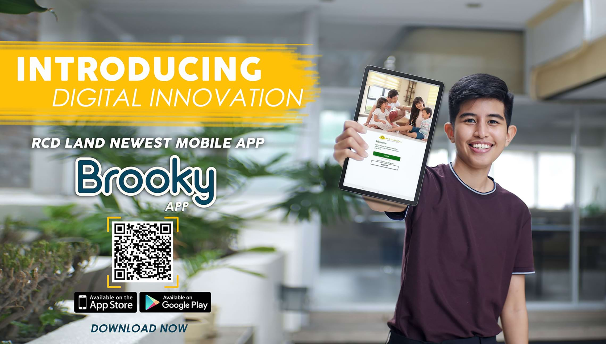
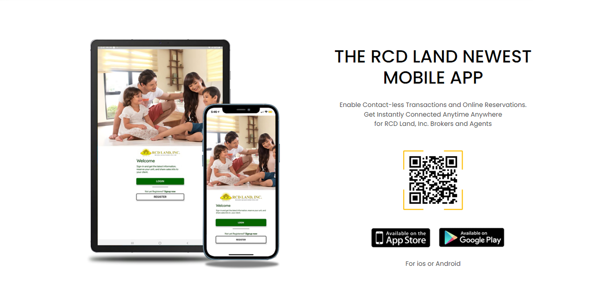

<section class="mt-[81px] py-20 bg-[#f7f7f7]">
    <div class="max-w-7xl mx-auto px-4">

        <!-- Section Header -->
        <div class="mb-12">
            <div class="max-w-5xl mx-auto flex items-start space-x-4">
                <div class="w-1 h-28 bg-green-500"></div>
                <div>
                    <h2 class="text-4xl font-bold text-gray-800">RCD Land Launches its First Ever Mobile Application
                    </h2>
                    <p class="text-gray-600 text-base mt-1 max-w-2xl">
                        RCD Land, Inc. is committed to being LOGGED-IN and embracing technology by introducing digital
                        innovation to its stakeholders through its newest mobile application – RCD Land’s Brooky!
                    </p>
                </div>
            </div>
        </div>

        <!-- Centered Photo -->
        <div class="flex justify-center my-12">
            
        </div>

        <!-- Author/Meta Info -->
        <div class="flex justify-center mb-8">
            <span class="text-base text-gray-700">
                <span>Author:</span> Nicole Dizon&nbsp;&nbsp;
                <span>Category:</span> Mobile App&nbsp;&nbsp;
                <span>Date:</span> <span>July 10th, 2021</span>
            </span>
        </div>

        <!-- Article Content -->
        <div class="max-w-3xl mx-auto text-gray-700 text-sm leading-relaxed px-4">
            <p>
                The real estate company launched its very first mobile application through their Logged-In event held
                via Facebook live last July 10th, 2021. The live was graced with almost 200 viewers on Facebook,
                composed of RCD sellers from different realties, RCD employees, and stakeholders.
            </p>
            <p class="mt-6">
                This event was part of RCD Land’s goal for a radical shift in 2021 to fully embrace the changes that the
                pandemic and the current situation has brought the real estate industry. With the present pandemic, gone
                were the days where we can hold on to the traditional practices of face-to-face events, site viewings,
                sales activities, and physical reservation transactions. The world emerged to a digital sphere where
                online consumption has changed significantly and homebuyers and sellers are keener on transactions that
                require little to zero physical contact while maximizing the tools and gadgets that are readily
                available to each and everyone such as their mobile phones, personal computers, and own internet
                connection. Thus, this requires software that are receptive to automation which has immensely enhanced
                costumer experience and engagement in a quick snap of the fingers. Furthermore, people are now leaning
                towards cashless transactions and are utilizing e-wallets, credit and debit cards to speed up
                transaction processes.
            </p>
            <p class="mt-6">
                In line with this, all businesses and industries are faced with the challenge to adapt to the forced
                digitalization of the world. RCD Land is just one of the many who are committed in providing its clients
                and partners the same value and level of assistance as the traditional practices but this time through
                technology and digital tools. Hence, RCD Land is launching their first ever mobile application to
                streamline the homebuying process for its stakeholders.
            </p>
            <p class="mt-6">
                With RCD Land’s Brooky app, sellers and clients can easily get the latest inventory, view projects and
                site maps, download sales kits, request for sample computations anytime and anywhere. This equips RCD
                sellers with the right and necessary information to close their deals faster and more efficiently.
                Here’s more, they can also now reserve their desired unit conveniently online through this mobile app!
            </p>
            <p class="mt-6">
                As RCD Land’s Vice President of Sales and Marketing, Mae Delantar, has stated “Brooky is like having
                your own coordinator to assist you 24/7 at your own convenience. This will surely help our sellers to
                close more deals and help our buyers as well to reserve their dream homes at their own accessibility.”
            </p>
            <p class="mt-6">
                RCD Royale Homes Tuy is also rapidly developing with all its amenities completed and ready for
                homeowners’ use. 29% of the single-attached housing units in Phase 1 are also completed, then land
                development in Phase 2 is already at 97%, while 50% of the townhouse units in Phase 3 have been
                accomplished. RCD Villas de Trece, on the other hand, is at 70% completion of the land development and
                has 102 townhouse units under ongoing construction.
            </p>
        </div>

        <!-- QR photo -->
        <div class="flex justify-center my-12">
            
        </div>

        <!-- Article Content -->
        <div class="max-w-3xl mx-auto text-gray-700 text-sm leading-relaxed px-4">
            <p>
                Brooky Technologies’ very own co-founder, Stephanie Uy, graced the event as a guest speaker to further
                equip RCD’s stakeholders regarding the specifications, capabilities, and method of RCD Land’s newest
                Brooky app. Ms. Uy walked everyone through the RCD Land Brooky app from how to download, to how to
                create their own accounts, and how to navigate the app to get their needed information through the app’s
                different sections and buttons.
            </p>
            <p class="mt-6">
                Valerie Fischer, a Neuro Linguistic Programming Practitioner, was also present as a guest speaker in RCD
                Land’s Logged-In event to discuss how to transform traditional selling to digital. The real estate
                industry has been known for its traditional concepts and beliefs, which made it even more challenging
                for its people to shift to the digital sphere of selling. It seems complicated at first but a great
                mindset, willingness to learn, and innovation to change indeed makes it easier to shift. This also
                ensures that sellers maximize the internet connection and their personal gadgets to reach more clients.
                Ms. Fischer gave tips and techniques to sellers on how they can transform their traditional ways of
                selling by maximizing digital platforms and devices to reach more clients and buyers to expand their
                business.
            </p>
            <p class="mt-6">
                As Ms. Fischer has stated, “The internet has democratized entrepreneurship for everybody that the power
                to reach clients are not enclosed to big corporations and companies but is available for all. It has
                empowered everyone to have a great reach of audience, in our case clients, with very little to zero
                expenses. The launching of the RCD Land’s brooky app makes you even luckier and widens your horizon
                more, given that it has equipped you with your needed information in your own mobile phones, which we
                have RCD Land to thank for.”
            </p>
            <p class="mt-6">
                Real estate is a big and known industry in the country and this cannot be limited to traditional
                concepts and practices. With the digital shift, this enables the widening of horizons for the brokers
                and real estate sellers to help homebuyers build their trust through the digital homebuying process by
                equipping them with the right and necessary information.
            </p>
            <p class="mt-6">
                With almost everything shifting to online digital platforms, RCD Land Inc. partnered with Brooky to
                ensure that our sellers are equipped with everything that they need in just a click of the finger.
                Brooky enables information to be accessible to our sellers who in turn provides the clients the best
                experience in reserving and purchasing their homes. More than being informative and relevant, Brooky is
                also very user-friendly which makes the process a whole lot easier and efficient!
            </p>
            <p class="mt-6">
                The launch of this mobile application embodies RCD Land’s commitment to provide quality and affordable
                homes to the Filipino people by equipping its sellers and brokers with digital tools that will provide
                them with the necessary information to present to their homebuyers. It also shows the company’s
                adaptation to today’s current situation and their continuous discovery of innovative ways to lead their
                stakeholders to the best practices in both selling and homebuying.
            </p>
            <p class="mt-6">
                Now, there’s no need to bring those bulky and heavy sales kits with Brooky’s mobile application
                conveniently accessible through your smartphone! From inventory maps, sample computations, digital
                forms, to the reservation documents –all these in your handy smartphone! Amazing, right?
            </p>
            <p class="mt-6">
                You may download RCD Land’s Brooky app in the links below:
            </p>
            <p class="mt-6">
                For IOS users - <a href="https://apps.apple.com/ph/app/rcd-land-brooky/id1576468850" target="_blank"
                    class="text-yellow-600 hover:underline">Download here</a>
            </p>
            <p class="mt-6">
                For Android users - <a href="https://play.google.com/store/apps/details?id=com.brooky.rcdland"
                    target="_blank" class="text-yellow-600 hover:underline">Download here</a>
            </p>
        </div>

        <!-- Embedded Video -->
        <div class="flex justify-center mt-16">
            <div class="w-full max-w-3xl px-4 aspect-video">
                <iframe class="w-full h-full rounded-lg shadow-lg"
                    src="https://www.youtube.com/embed/YOUR_VIDEO_ID_HERE" title="RCD Land Mobile App Launch"
                    frameborder="0"
                    allow="accelerometer; autoplay; clipboard-write; encrypted-media; gyroscope; picture-in-picture"
                    allowfullscreen>
                </iframe>
            </div>
        </div>

    </div>
</section>